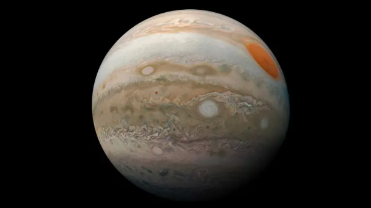

Jupiter, being the biggest planet, gets its name from the king of the ancient Roman gods.
With a radius of 43,440.7 miles (69,911 kilometers), Jupiter is 11 times wider than Earth. If Earth were the size of a grape, Jupiter would be about as big as a basketball.
Discovered in 1979 by NASA's Voyager 1 spacecraft, Jupiter's rings were a surprise. The rings are composed of small, dark particles, and they are difficult to see except when backlit by the Sun. Data from the Galileo spacecraft indicate that Jupiter's ring system may be formed by dust kicked up as interplanetary meteoroids smash into the giant planet's small innermost moons.